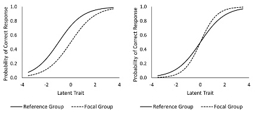

이 장에서는 측정 편향을 감지하기 위한 두 가지 프레임워크에 중점을 둡니다. 먼저 척도 수준(즉, 전체) 편향을 탐지하기 위한 요인분석적 접근법으로서 측정 불변성에 대한 간략한 설명으로 시작하여, lavaan 패키지를 사용하여 측정 불변성을 평가하는 방법을 시연합니다(Rosseel, 2012). 그런 다음 문항 수준 편향의 지표로 차별기능문항(DIF)을 소개하고 균일 및 비균일 DIF에 대해 설명한 다음 R의 difR(Magis, Beland, Tuerlinckx, & De Boeck, 2010) 및 mirt(Chalmers, 2012) 패키지를 사용하여 Mantel-Haenszel(MH) 방법, 로지스틱 회귀, 문항 반응 이론 우도비(IRT-LR) 검정을 통해 DIF를 탐지하는 방법을 시연합니다.
11.2 측정불변성
측정 도구의 점수를 사용하여 서로 다른 개인 그룹 간에 비교하려는 경우, 잠재 변수가 표본의 하위 그룹(예: 남성 및 여성 참가자)에서 유사하게 기능하고 있음을 보여 주어야 합니다. 이러한 절차를 측정 불변성이라고 합니다. 예를 들어, 일상 생활에서 개인의 영성을 측정하는 검사도구를 개발한다고 가정해 보겠습니다. 이 검사도구를 참가자 표본에게 시행한 후, 남성과 여성 참가자의 영성 수준을 비교하고자 합니다. 검사도구의 일부 문항 또는 전체가 남성과 여성 참가자에게 유사하게 기능하지 않으면 잠재 변수(즉, 일상 생활에서의 영성)가 성별 그룹 간에 동일한 의미를 갖지 않을 수 있습니다. 이러한 문제가 발생하면, 예를 들어 한 그룹이 다른 그룹보다 영성 수준이 더 높다고 말하는 것은 의미가 없는데, 이는 동일한 잠재 변수를 기준으로 비교한 것이 아니기 때문입니다.
측정 불변성이 필수적인 또 다른 상황은 시점 1의 검사도구 점수를 시점 2의 동일한 검사도구 점수와 비교하고자 할 때 발생합니다. 이 두 시점을 비교하려면 시간이 지남에 따라 측정 도구의 안정성을 보장할 수 있어야 합니다. 동일한 영성의 예를 계속 이어서 하면, 영성 도구의 두 번의 시행(예: 2002년과 2017년)에서 얻은 점수를 비교하려면 시간에 따른 도구의 측정 불변성을 입증해야 합니다. 영성에 대한 조작적 정의(즉, 사람들이 영성을 바라보고 정의하는 방식)가 시점에 따라(2002년에서 2017년으로) 바뀌었다면, 동일한 도구를 사용했음에도 불구하고 두 번의 시행에서 비교 가능한 점수를 얻지 못할 수도 있습니다.
우리는 종종 그룹 간에 어떤 구인을 비교할 때 암묵적으로 측정 불변성을 가정합니다. 예를 들어 회귀분석과 t검정을 수행할 때 구인이 유사하게 기능한다고 가정합니다. 잠재 변수 모델링은 이러한 가정을 엄격하게 평가할 수 있는 방법을 제공합니다.
11.2.1 측정 불변성 평가하기
다음 예에서는, 제4장에서 처음 소개한 interest 데이터 세트를 사용합니다. 이 데이터 세트는 인지, 성격 및 직업 흥미에 대한 측정값을 포함하는 조작 데이터 세트입니다. interest 데이터 세트의 인지 측정값을 사용하여 성별에 따른 측정 불변성을 평가합니다. 분석을 시작하기 전에 먼저 library 명령을 사용하여 lavaan 및 hemp 패키지를 로드합니다.
library("hemp")
Loading required package: psych
Loading required package: lattice
Loading required package: lavaan
This is lavaan 0.6-16
lavaan is FREE software! Please report any bugs.
Attaching package: 'lavaan'
The following object is masked from 'package:psych':
cor2cov
Loading required package: mirt
Loading required package: stats4
Loading required package: lme4
Loading required package: Matrix
Attaching package: 'lme4'
The following object is masked from 'package:mirt':
fixef
Loading required package: reshape2
Loading required package: boot
Attaching package: 'boot'
The following object is masked from 'package:lattice':
melanoma
The following object is masked from 'package:psych':
logit
Loading required package: equate
library("lavaan")
interest 데이터 세트에서 성별 변수는 남성은 1, 여성은 2가 되도록 코딩되었습니다. 분석을 더 쉽게 따라갈 수 있도록 ifelse 함수를 사용하여 성별 변수를 질적 변수로 다시 코딩합니다. 새로운 성별 변수에는 참가자에 대해 1과 2 대신 ‘남성’ 및 ’여성’이라는 레이블이 있습니다.
제4장에서 탐색적 요인 분석을 통해 언어적 요인과 수학적 요인이라는 두 가지 인지 요인을 확인했음을 기억하세요. 이 요인 구조를 lavaan 구문을 사용하여 정의하고 cog_mod 에 저장합니다. 그런 다음 cfa 함수를 사용하여 확인적 요인 분석(CFA)을 실행하고 결과를 cog_fit으로 저장한 다음 마지막으로 fitMeasures 함수를 사용하여 추정 모델에 대한 적합도 지수를 출력합니다.
우리 모델은 CFI, TLI 및 RMSEA에 근거해 좋은 적합도를 가집니다. 모델이 데이터에 잘 맞지 않는다면 측정 불변성을 고려하는 것은 의미가 없을 것입니다. 우리 모델은 데이터에 잘 맞기 때문에 성별에 따른 측정값 불변성을 조사할 수 있습니다.
11.2.1.1 형태 불변성
측정 불변성을 입증하는 첫 번째 단계는 모델이 각 집단에 적합하다는 것을 보여주는 것입니다. 이것은 두 가지 방법으로 수행할 수 있습니다. (1) 각 하위 집단에 데이터를 맞출 수 있고, (2) 다집단 CFA 모델을 사용할 수 있습니다. 여기서는 두 번째 접근 방식을 사용하며, cfa 함수를 사용할 때 group = “gender_f” 인수를 추가하여 lavaan에서 이 작업을 수행합니다. 이 인수를 사용하면 모든 모수를 동일성 제약 없이 집단 간에 자유롭게 추정할 수 있습니다. 따라서 두 모델(남성 모델과 여성 모델)은 요인 적재치, 절편 및 분산이 동일하지 않습니다. 선험적으로 집단 간에 분산이 동일하다고 예상할 이유가 없으므로 여기서는 표준화 계수를 사용해서는 안 됩니다.
configural <-cfa(cog_mod, data = interest, group ="gender_f")fitMeasures(configural, fit.measures =c("cfi", "tli", "rmsea"))
cfi tli rmsea
0.998 0.996 0.035
적합도 지수를 기준으로 각 집단에 대한 데이터가 모델에 매우 잘 맞습니다. 형태 모델이 잘 맞았으므로 이제 모수를 집단 간에 동일하게 제약하고 성별에 따른 측정 불변성을 보다 철저하게 조사할 수 있습니다.
11.2.1.2 약한 불변성
약한 (메트릭) 불변성을 평가하기 위해, 요인 부하가 집단 간에 동일하도록 제약합니다. 이 제약 조건은 요인이 집단 전체에서 동일한 의미를 갖는다는 것을 나타냅니다. 즉, 집단이 잠재 구인에 동일한 의미를 부여하고 있는지에 대한 문제를 해결합니다.
약한 불변성 가정이 성립하지 않는다면, 명시 변수의 의미는 집단마다 다를 것입니다. 이 단계와 향후 모든 단계에서 부분 불변성만 있는 경우(평가할 수 있는 경우), 불변 모수는 동일하도록 제약하고 다른 모수는 집단 간에 자유롭게 사용할 수 있도록 허용합니다.
lavaan에서 약한 불변성 모델을 적합하려면 cfa 함수에 group.equal = “loadings” 인수를 전달해야 합니다. 이 인수는 interest 데이터 세트의 남성 참가자와 여성 참가자 간에 요인 부하가 동일하도록 보장합니다.
weak_invariance <-cfa(cog_mod, data = interest,group ="gender_f",group.equal ="loadings")fitMeasures(weak_invariance,fit.measures =c("cfi", "tli", "rmsea"))
cfi tli rmsea
1.000 1.000 0.004
weak_invariance의 적합도 지수에 근거해, 우리 모델에 대한 약한 불변성 가정을 뒷받침하는 증거가 있습니다. 모든 측정 불변성 모델은 서로 내재되어 있기 때문에 제약이 적은 모델(형태 동일성 모델)이 제약이 많은 약한 불변성 모델보다 훨씬 더 잘 맞는지 여부를 카이제곱 차이 검정을 사용하여 공식적으로 평가할 수 있습니다. 우리의 목표는 측정 불변성을 보여주는 것이므로 형태 동일성 모델이 약한 불변성 모델에 비해 모델 적합도가 개선되지 않았다는 영가설을 기각하지 않는 것입니다.
위의 결과에 따르면 영가설을 기각하지 못합니다. 이는 약한 불변성을 뒷받침하는 증거입니다. 이 결과를 바탕으로 약한 불변성을 가지고 있다는 결론을 내리고 강한 불변성을 평가하는 단계로 넘어갈 수 있습니다.
11.2.1.3 강한 불변성
강한(스칼라) 불변성에는 집단 간에 절편이 동일해야 한다는 제약 조건이 추가됩니다. 강한 불변성 모델에서는 요인적재치와 절편이 집단 간에 모두 동일하도록 설정됩니다. 이는 구인의 의미(요인 적재치)와 명시 변수의 기저 수준(절편)이 두 집단에서 동일하다는 것을 의미합니다. 강한 불변성을 가지면 잠재 구인의 평균 차이를 비교할 수 있습니다. 측정 불변성을 평가하는 이 단계에서 요인 평균을 추정하고 검토할 수 있습니다.
강한 불변성을 검증하기 위해 모델에서 group.equal 인수를 group.equal = c(“loadings”, “intercepts”)로 업데이트하고 모델 결과를 strong_invariance로 저장한 다음 추정된 모델에 대한 모델 적합도 지수를 출력합니다.
결과는 적합도 지수가 계속 개선되고 있음을 보여줍니다. 적합도 지수만 보면 강한 불변성 가정을 충족한 것으로 보입니다. 그러나 anova 함수를 사용하여 이 가정을 공식적으로 평가해야 합니다. 이번에는 제약 모델을 strong_invariace 모델이라고 하고 제약이 덜된 모델을 weak_invariance 모델이라고 합니다.
결과는 다시 영가설을 기각하지 못했음을 보여줍니다. 이 시점에서 중단하고 요인 평균을 검토할 수도 있지만, 모델 결과를 검토하기 전에 엄격한 불변성을 입증하는 것이 더 유리할 것입니다.
11.2.1.4 엄격한 불변성
엄격한 불변성을 위해 집단 간 명시 변수에 대해 동일한 잔차 분산이라는 추가 제약 조건을 추가합니다. 원점수(예: 잠재 변수의 지표에 대한 점수의 합계 또는 평균)를 기준으로 비교하려는 경우 모델이 엄격한 불변성 가정을 충족하는지 확인해야 합니다. 관찰된 분산은 진점수 분산과 잔차/오차 분산이 합산된 값이기 때문입니다. 잔차 분산이 같으면 진점수 분산도 같은 양을 갖습니다. 강한 불변성과 마찬가지로 잠재 평균을 추정하고 비교할 수 있습니다.
이전 모델 구문과 마찬가지로, 이 모델에 대한 group.equal 인수를 업데이트해야 합니다. 이번에는 group.equal = c(“loadings”, “intercept”, “residuals”)를 사용하여 이러한 모든 모수가 성별에 걸쳐 동일하도록 제약합니다. 결과를 strict_invariance로 저장합니다.
측정 불변성을 검토할 때 제공되는 새로운 정보에 초점을 맞추기 위해 summary 함수의 출력 내용을 대부분 요약했습니다. cfa 함수의 결과에 대한 자세한 설명은 제4장을 참조하시기 바랍니다. 결과의 맨 위에는 집단별 샘플 수와 현재 모델의 카이제곱, 카이제곱 통계에 대한 각 집단의 기여도가 표시됩니다. 집단은 독립적이므로 각 집단의 기여도의 합이 총 카이제곱 통계입니다. 그런 다음 이 경우 기준 집단인 여성에 대한 추정 모수를 먼저 출력한 다음 비교 집단인 남성에 대한 모수를 출력합니다. 수학 요인에 대한 요인 적재치와 공분산 및 분산은 출력에서 삭제되었습니다. 읽기 요인 적재치에 초점을 맞추면 그 옆에 (.p2.)가 있는 것을 알 수 있습니다. 이것이 모수에 레이블을 지정하여 lavaan이 제약 조건을 처리하는 방식입니다. 이 예에서 .p2. 라는 이름은 여성과 남성 모두에 대한 언어 읽기의 요인 적재치에 해당합니다. 다른 모수도 마찬가지입니다(예: 동일한 결과에서 sentcmp의 경우 .p3.).
절편 표의 맨 아래에는 남성 집단의 언어 및 수학 요인에 대한 평균이 나와 있습니다. 통계적으로 유의미한 절편은 해당 요인에 대해 집단 간에 유의미한 차이가 있음을 의미합니다. 언어 요인에서는 집단 간에 통계적으로 유의미한 차이가 없지만 수학 요인에서는 남성 집단이 여성 집단보다 0.299 더 높을 것으로 예상되는 것을 알 수 있습니다.
전반적으로 엄격한 불변성이 있고, 언어 요인에서는 집단 간 차이가 없으며, 수학 요인에서는 남성이 여성보다 높을 것으로 예상된다는 결론을 내렸습니다.
11.2.1.5 부분 불변성 평가하기
어떤 단계에서도 완전한 불변성(즉, 약한 불변성, 강한 불변성, 엄격한 불변성)이 없는 경우 부분 불변성에 기반한 대체 솔루션에 집중할 수 있습니다. 부분 불변성은 lavaan의 lavTestScore 함수를 사용하여 살펴볼 수 있습니다. 이 함수를 사용하면 집단 간에 동일성 제약 조건이 해제되는 효과를 확인할 수 있습니다. 이는 새 경로와 관련된 새로 추가된 모수에 대한 수정 지수만 표시하는 modindices 함수와 반대되는 개념입니다. 부분 불변성의 맥락에서 모수는 모델에서 새로 추정되지 않고 대신 모델이 집단 간에 모수를 자유롭게 추정하도록 허용하므로 modindices가 아닌 lavTestScore를 사용합니다.
다음 예에서는, lavTestScore 함수를 사용하여 강한 불변성(예: strong_invariance) 모델에 대한 부분 불변성을 살펴보겠습니다.
결과의 첫 번째 부분은 다변량 점수 검정(라그랑주 승수 검정)으로, 모든 제약 조건을 함께 해제하면 모델 개선이 없을 것이라는 영가설을 검정하는 것입니다. 결과는 이 영가설을 기각하지 못했음을 보여줍니다. 첫 번째, 두 번째 및 세 번째 열은 제약 조건이 없는 추정(즉, 그룹 간에 자유롭게 추정)을 위해 고려 중인 모수에 해당합니다. 네 번째 열은 단변량 점수 검정(즉, 카이제곱 차이 검정)입니다. 다시 한 번 강조하지만, 3.84는 1 자유도에 대한 임계값입니다. 강한 불변성을 발견했기 때문에 당연히 어떤 동일성을 해제해도 모델 적합도가 통계적으로 크게 개선되지 않는다는 것을 알 수 있습니다. 그러나 만일 그렇지 않았다면 X2 열에서 큰 카이제곱 값을 볼 수 있을 것으로 예상할 수 있습니다. 가장 큰 X2 값은 .p19. == .p42…와 연관되어 있습니다. 이것이 어떤 모수를 나타내는지 확인하려면 parTable 함수를 실행하여 표에서 .p19. 문항을 찾아야 합니다.
이것은 집단 전체에서 이 절편을 자유모수로 추정해야 함을 나타내는 mathmtcs ~ 1에 해당한다는 것을 알 수 있습니다. 이 값을 cfa 호출에 포함하려면 mathmtcs ~ 1을 복사하여 group.partial 인수에 붙여넣으면 됩니다. 다음 코드는 절편 모수를 자유모수로 추정하는 방법을 보여줍니다.
차등 기능 문항(DIF)은 교육 및 심리 평가에서 문항 수준 편향을 감지하는 데 사용됩니다. DIF는 잠재적 특성을 통제한 후 피험자의 집단 구성원(예: 남성 대 여성)과 문항 수행 간의 조건부 의존성으로 인해 발생합니다. 문항이 이분으로 채점된 경우, 문항 수행은 문항에 정답을 맞출 확률을 의미하며, 문항이 다분으로 채점된 경우, 문항 수행은 다른 응답 범주(서열 또는 비서열)보다 특정 응답 범주를 선택하거나 지지할 확률을 의미합니다.
DIF의 결과, 편향된 문항은 특정 집단에 일정한 이점을 제공하거나(균일 DIF), 잠재 특성 연속체에 걸쳐 크기 및/또는 방향에 따라 이점이 달라집니다(비균일 DIF). DIF의 맥락에서 초점 집단은 검사의 문항에 응답할 때 참조 집단의 피험자에 비해 불리한 것으로 의심되는 피험자를 의미합니다. 문항이 균일한 DIF를 보이는 경우, 초점 집단의 성적이 잠재 특성 연속체를 따라 기준 집단의 성적보다 지속적으로 떨어지는 경향이 있습니다. 잠재 특성 수준을 통제한 후 초점 집단은 참조 집단보다 문항에 정답을 맞힐 확률이 낮습니다. 문항이 균일하지 않은 DIF를 나타내는 경우 초점 집단과 참조 집단 간의 차이는 한 방향이 아닙니다. 즉, 한 집단이 다른 집단을 능가할 수 있지만 잠재 특성 연속체의 특정 지점 이후에는 이 관계가 역전됩니다.
그림 11.1은 이분 문항에 대한 균일 및 비균일 DIF의 예를 보여줍니다. 각 플롯에는 초점 집단과 참조 집단에 대한 문항 특성 곡선(ICC, ICC에 대한 자세한 내용은 제5장 참조)이 별도로 표시되어 있습니다. 균일 DIF는 초점 집단이 참조 집단에 비해 문항에 정답할 확률이 낮습니다. 비균일 DIF는 참조 집단과 초점 집단의 ICC는 잠재 특성 연속체에서 \(\theta\) = 0에서 교차합니다. 이는 \(\theta\) = 0까지는 참조 집단이 초점 집단보다 문항에 정답할 확률이 높지만, \(\theta\) = 0 이후에는 문항이 참조 집단보다 초점 집단에 유리해지기 시작한다는 것을 의미합니다.

이분 문항에서 균일과 비균일 DIF
이분 및 다분 채점 문항에서 균일 및 비균일 DIF를 감지하는 데 사용할 수 있는 통계적 방법은 여러 가지가 있습니다. 이 장에서는 맨텔-헨젤(MH) 방법(Mantel-Haenszel, 1959), 로지스틱 회귀(Swaminathan & Rogers, 1990), 문항 반응 이론 우도비(IRT-LR) 검정(Thissen, Steinberg, & Wainer, 1993) 등 세 가지 방법을 중점적으로 살펴봅니다. IRT-LR 검정은 문항 모수와 잠재 특성 수준을 추정하기 위해 특정 IRT 모델을 사용해야 하며, 이 모델은 DIF 분석 과정에서 사용되기 때문에 모수적 DIF 탐지 방법으로 간주됩니다. IRT-LR 검정과 달리 MH 및 로지스틱 회귀 방법은 비모수적 DIF 탐지 방법으로 간주되는데, 이 방법에서는 DIF를 탐지할 때 원 문항 및 검사 점수만 포함하기 때문입니다(즉, IRT가 필요하지 않음). 다음 섹션에서는 각 DIF 감지 방법에 대해 간략하게 설명하고 R에서 구현하는 방법을 보여 드리겠습니다.
11.3.1 Mantel-Haenszel(MH) 방법
MH 방법(Mantel & Haenszel, 1959)은 다른 DIF 검출 방법에 비해 계산과 해석이 쉽기 때문에 가장 널리 사용되는 DIF 검출 방법 중 하나입니다. MH 방법은 균일 DIF만 검출할 수 있습니다. 따라서 균일하지 않은 DIF가 존재하는 경우 MH 방법은 적절한 접근 방식이 아닐 수 있습니다.
MH 방법은 총점 원점수에 따라 조건부로 집단 구성원(즉, 초점 집단 및 참조 집단)과 특정 문항에 대한 응답 간에 관계가 있는지 여부를 조사합니다. 주어진 문항에 대한 MH 통계를 산출하기 위해 집단 소속 및 응답 유형(정답 또는 오답)을 행과 열로 포함하는 2X3X2개의 분할표를 생성합니다. 표 11.1은 MH 통계를 산출하는 데 필요한 분할표의 요소를 보여줍니다. 총점 원점수를 기준으로 구분된 피험자 집단의 인덱스로 \(k\)를 사용하여(\(k = 1, 2, 3, …, m\)), \(A_k\) 및 \(C_k\)는 문항을 정답으로 답한 참조 및 초점 집단의 피험자 수, \(B_k\) 및 \(D_k\)는 문항을 오답으로 답한 참조 및 초점 집단의 피험자 수, \(n_{1k}\) 및 \(n_{0k}\)는 문항을 정답과 오답으로 답한 총 피험자 수, \(n_{Rk}\) 및 \(n_{Fk}\)는 참조 및 초점 집단의 총 피험자 수, \(T_k\)는 집단 \(k\)의 총 피험자 수입니다.
MH 방법에 대한 2X3X2 분할표
문항 반응
1=정답
0=오답
합계
집단
참조
\(A_k\)
\(B_k\)
\(n_{Rk}\)
초점
\(C_k\)
\(D_k\)
\(n_{Fk}\)
전체
\(n_{1k}\)
\(n_{0k}\)
\(T_k\)
표 11.1에 나열된 빈도를 사용하여 MH 통계(\(\hat\alpha_{MH}\))는 다음과 같이 계산할 수 있습니다.
\(\hat\alpha_{MH}\) > 1은 참조 집단에 유리한 유의미한 DIF를 나타내며, \(\hat\alpha_{MH}\) < 1은 초점 집단에 유리한 유의미한 DIF를 나타냅니다. \(\hat\alpha_{MH}\) 통계치는 종종 \(\hat\alpha_{MH}\) 통계치의 자연 로그인 \(\hat\lambda_{MH}\) 로 변환됩니다. \(\hat\lambda_{MH}=ln(\hat\alpha_{MH})\). 이 대체 통계인 \(\lambda\)는 DIF의 대칭 측정값으로, \(\lambda\) = 0은 DIF가 없음을 나타내고, \(\lambda\) > 0은 참조 집단에 유리한 DIF, \(\lambda\) < 0은 초점 집단에 유리한 DIF를 나타냅니다. \(\hat\lambda_{MH}\)가 0에서 더 많이 벗어날수록 DIF가 더 중요해집니다.
DIF가 통계적으로 유의미한지 테스트하기 위해 만텔-헨첼 카이스퀘어 검정(Mantel-Haenszel chi-square test)를 사용할 수 있습니다(Mantel & Haenszel, 1959). 맨텔-헨젤 카이제곱 통계(\(\chi^2_{MH}\))는 다음과 같이 계산할 수 있습니다(Penfield & Camilli, 2006).
\(\chi_{MH}^2\) 통계치는 대략 자유도 1의 카이제곱 변수로 분포됩니다. 특정 문항에 대해 \(\chi_{MH}^2\) 통계치가 통계적으로 유의미한 경우, 해당 문항은 균일 DIF를 나타내는 것으로 표시되어야 합니다. 카이제곱 유의성 검정 외에도 Holland와 Thayer(1988)는 \(\hat\alpha_{MH}\) 통계치를 사용하여 MH 델타 지수라는 대체 지수를 제안했습니다. 이 지수는 효과 크기 측정과 같은 기능을 하며 DIF의 심각도를 분류합니다. 이 절차는 ETS 델타 분류라고도 합니다. MH 델타 지수는 다음과 같이 계산할 수 있습니다.
\[
\Delta_{MH}=-2.35\hat\alpha_{MH}
\]
여기서 \(\Delta_{MH}\) 통계치는 참조 집단에 유리한 DIF에 대해서는 음수이고
초점 집단에 유리한 DIF에 대해서는 양수입니다.
\(\left|\Delta_{MH}\right|\le 0\) 은 “A: 무시할 수 있는 DIF”,
\(1<\left|\Delta_{MH}\right|\le 1.5\)는 “B: 중간 정도의 DIF”
\(\left|\Delta_{MH}\right|> 1.5\)는 “C: 큰 DIF”에 해당합니다(Holland & Thayer, 1988).
다음 예에서는, hemp 패키지와 difR 패키지(Magis et al., 2010)의 VerbAggWide 데이터 세트를 사용하여 균일 DIF를 감지하는 MH 방법을 시연합니다. 제6장에서 설명한 것처럼 VerbAggWide 데이터 세트에는 언어적 공격성과 관련된 일련의 질문에 대한 316명의 참가자의 응답이 포함되어 있습니다. 데이터 세트의 처음 세 변수는 아이디(참가자 식별 번호), 분노(참가자의 분노 점수), 성별(참가자의 성별, 여기서 M은 남성, F는 여성을 나타냄)입니다. 나머지 변수(예: S1WantCurse, S1WantScold, S1WantShout)는 언어적 공격성에 관한 질문에 대한 응답입니다.
DIF 분석을 시작하기 전에 먼저 VerbAgg라는 새 데이터 세트를 생성하고, 이 데이터 세트에는 성별과 VerbAggWide 데이터 세트의 질문만 포함됩니다. 그런 다음, difR 패키지에서는 응답이 이분이어야 하므로 VerbAgg의 원래 응답(0: 아니요, 1: 아마도, 2: 예)을 이분 응답(0: 아니요, 1: 아마도 또는 예)으로 다시 코딩합니다. apply 및 ifelse 함수를 사용하여 질문을 다시 코딩합니다(즉, 열 2~25).
다음으로, difR 패키지의 difMH 함수를 사용하여 MH 방법으로 DIF 분석을 수행합니다. diffMH 함수에서 사용할 데이터 세트(VerbAgg), 그룹화 변수를 나타내는 변수(Gender), 초점 집단을 지정하는 값(예: 여성 참가자의 경우 F)을 지정합니다. 결과를 results_MH로 저장한 다음 출력합니다.
library("difR")results_MH <-difMH(Data = VerbAgg, group ="Gender",focal.name ="F")results_MH
Detection of Differential Item Functioning using Mantel-Haenszel method
with continuity correction and without item purification
Results based on asymptotic inference
Matching variable: test score
No set of anchor items was provided
No p-value adjustment for multiple comparisons
Mantel-Haenszel Chi-square statistic:
Stat. P-value
S1WantCurse 1.7076 0.1913
S1WantScold 2.1486 0.1427
S1WantShout 0.9926 0.3191
S2WantCurse 1.9302 0.1647
S2WantScold 2.9540 0.0857 .
S2WantShout 9.6032 0.0019 **
S3WantCurse 0.0013 0.9711
S3WantScold 0.6752 0.4112
S3WantShout 0.8185 0.3656
S4wantCurse 1.6292 0.2018
S4WantScold 0.0152 0.9020
S4WantShout 4.1188 0.0424 *
S1DoCurse 0.1324 0.7160
S1DoScold 2.7501 0.0972 .
S1DoShout 0.0683 0.7938
S2DoCurse 6.3029 0.0121 *
S2DoScold 6.8395 0.0089 **
S2DoShout 0.2170 0.6414
S3DoCurse 5.7817 0.0162 *
S3DoScold 3.8880 0.0486 *
S3DoShout 0.2989 0.5846
S4DoCurse 1.1220 0.2895
S4DoScold 1.4491 0.2287
S4DoShout 0.8390 0.3597
Signif. codes: 0 '***' 0.001 '**' 0.01 '*' 0.05 '.' 0.1 ' ' 1
Detection threshold: 3.8415 (significance level: 0.05)
Items detected as DIF items:
S2WantShout
S4WantShout
S2DoCurse
S2DoScold
S3DoCurse
S3DoScold
Effect size (ETS Delta scale):
Effect size code:
'A': negligible effect
'B': moderate effect
'C': large effect
alphaMH deltaMH
S1WantCurse 0.5881 1.2476 B
S1WantScold 0.5649 1.3420 B
S1WantShout 0.6906 0.8701 A
S2WantCurse 0.5156 1.5567 C
S2WantScold 0.5051 1.6052 C
S2WantShout 0.3472 2.4861 C
S3WantCurse 1.0595 -0.1358 A
S3WantScold 1.3901 -0.7741 A
S3WantShout 0.6544 0.9965 A
S4wantCurse 0.5935 1.2260 B
S4WantScold 0.9173 0.2028 A
S4WantShout 0.4263 2.0036 C
S1DoCurse 1.2551 -0.5340 A
S1DoScold 2.0021 -1.6313 C
S1DoShout 0.8499 0.3821 A
S2DoCurse 3.1159 -2.6709 C
S2DoScold 2.6693 -2.3072 C
S2DoShout 1.2608 -0.5447 A
S3DoCurse 2.1662 -1.8165 C
S3DoScold 2.1153 -1.7606 C
S3DoShout 1.5690 -1.0585 B
S4DoCurse 1.5518 -1.0327 B
S4DoScold 1.5661 -1.0541 B
S4DoShout 0.6229 1.1123 B
Effect size codes: 0 'A' 1.0 'B' 1.5 'C'
(for absolute values of 'deltaMH')
Output was not captured!
결과는 두 섹션으로 구성됩니다. 결과의 첫 번째 부분에는 문항에 대한 MH 카이제곱 통계와 해당 p 값이 표시됩니다. MH 카이제곱 검정의 결과에 따르면 VerbAgg 데이터 세트의 6개 문항이 알파 수준 \(\alpha\) = .05로 플래그가 지정되어 남성과 여성 참가자 간에 균일 DIF를 나타내고 있습니다. 이러한 문항은 결과 하단에 나열되어 있습니다. 결과의 두 번째 부분에는 문항에 대한 ETS의 델타 분류를 사용하여 효과 크기가 표시됩니다. 결과에 따르면 9개 문항은 “C: 큰 DIF”를 나타내고, 7개 문항은 “B: 중간 정도의 DIF”를 나타내고, 나머지 문항은 “A: 무시할 수 있는 DIF”로 분류되었습니다.
difMH 함수로부터 저장된 결과는 DIF를 그래프로 검사하는 데에도 사용할 수 있습니다(그림 11.2). plot 함수를 사용하면 MH 카이제곱 검정에 따라 플래그가 지정된 문항을 확인할 수 있습니다. DIF로 플래그가 지정된 문항은 임계치 카이제곱 값의 수평선 위에 표시됩니다(유의 수준이 \(\alpha = .05\)인 경우 \(\chi^2 = 3.84\)). 알파 수준은 diffMH 함수에서 alpha 옵션을 설정하여 수정할 수 있습니다(예: alpha = .01).
plot(results_MH)
The plot was not captured!
diffMH 함수에는 앵커 (DIF가 없는) 문항을 지정하는 anchor, 앵커 항목을 정제하는 반복 프로세스를 위한 purify, 다중 비교에서 p값 조정을 위한 p.adjust.method(예: Benjamini-Hochberg 조정) 등 다른 유용한 옵션이 포함되어 있습니다. 예를 들어, 정제 및 p값 조정을 통해 동일한 DIF 분석을 실행할 수 있습니다.
results_MH <-difMH(Data = VerbAgg, group ="Gender",focal.name ="F", purify =TRUE,p.adjust.method ="BH")
11.3.2 로지스틱 회귀분석
로지스틱 회귀분석 접근법(Swaminathan & Rogers, 1990)은 계산이 간단하고 균일 및 비균일 DIF를 모두 감지할 수 있기 때문에 가장 널리 사용되는 DIF 감지 방법 중 하나입니다. 이 DIF 탐지 방법은 이분 문항에 정답을 맞힐 확률(또는 특정 응답 옵션을 지지할 확률)을 피험자의 특성 추정치(X), 집단 소속(G), 피험자의 특성 추정치와 집단 소속(GX)의 상호작용으로 예측하는 일련의 로지스틱 회귀 모델을 비교하는 것을 기반으로 합니다. DIF를 감지하기 위한 로지스틱 회귀분석 접근 방식을 설명하기 위해 다음 로지스틱 회귀 모델을 고려합니다.
\[
P(Y=1|z)={e^z \over 1+e^z}
\]
여기서 \(P(Y = 1|z\))는 DIF에 대해 조사 중인 문항에 정답을 제공할 확률이고, z는 하나 이상의 예측 변수에 기반한 선형 방정식입니다.
로지스틱 회귀분석 접근 방식에서 기저 모델(모델 0)에는 피험자의 특성 추정치(X)만 단일 예측자로 포함됩니다.
\[
z=\beta_0+\beta_1X
\]
여기서 X는 피험자의 특성 추정치(예: 총점 원점수)입니다.
다음 모델(모델 1)은 피험자의 특성 추정치 외에 집단 소속(G)을 예측 변수로 포함하며, 이는 균일 DIF를 검정하는 데 필수적입니다.
\[
z=\beta_0+\beta_1X+\beta_2G
\]
여기서 초점 집단은 G = 1, 참조 집단은 G = 0입니다.
모델 0과 모델 1 간의 의사 R-제곱 차이가 유의미하거나 \(\beta_2\)가 0과 유의미하게 다르면(즉, \(\beta_2 \ne 0\)) 문항이 균일 DIF를 나타냅니다.
마지막 모델(모델 2)은 모델 1의 예측 변수에 더해 집단 소속과 피험자의 특성 추정치(GX) 간의 상호작용을 포함하며, 이는 비균일 DIF를 테스트하는 데 필수적입니다.
\[
z=\beta_0+\beta_1X+\beta_2G+\beta_3GX.
\]
\(\beta_2\)가 유의한지 여부에 관계없이 모델 1과 모델 2 간의 의사 R-제곱 차이가 유의한 경우(또는 \(\beta_3\)가 0과 유의하게 다른 경우) 문항이 비균일 DIF를 나타냅니다.
균일 및 비균일 DIF에 대한 개별 비교 외에도 균일 및 비균일 DIF를 동시에 고려할 때 모델 0과 모델 2를 비교하기 위한 옴니버스 검정을 수행할 수도 있습니다. 모델 0과 모델 2 간의 유의미한 Rsquared 차이는 조사 대상 문항에 DIF가 있음을 의미하므로 DIF의 유형을 정의하기 위해 후속 분석이 필요합니다.
로지스틱 회귀분석 접근법을 사용하여 DIF를 탐지하는 방법을 보여드리기 위해 다음 예제에서 difR 패키지의 difLogistic 함수를 사용합니다. MH 방법의 경우, 로지스틱 회귀분석 접근법을 시연하기 위해 VerbAgg를 사용합니다. 먼저, difLogistic 함수에서 사용할 데이터 세트(VerbAgg), 집단 변수를 나타내는 변수(Gender), 초점 집단을 지정하는 값(여성 참가자를 초점 집단으로 설정하려면 focal.name = “F”), 검사 유형(균일 및 비균일 DIF를 동시에 테스트하려면 type = “both”)을 지정합니다. 결과를 logistic_fit으로 저장하고 마지막에 출력합니다.
logistic_fit <-difLogistic(Data = VerbAgg, group ="Gender",focal.name ="F", type ="both")logistic_fit
Detection of both types of Differential Item Functioning
using Logistic regression method, without item purification
and with LRT DIF statistic
Matching variable: test score
No set of anchor items was provided
No p-value adjustment for multiple comparisons
Logistic regression DIF statistic:
Stat. P-value
S1WantCurse 2.0014 0.3676
S1WantScold 3.3541 0.1869
S1WantShout 2.4742 0.2902
S2WantCurse 4.7296 0.0940 .
S2WantScold 4.1404 0.1262
S2WantShout 11.4111 0.0033 **
S3WantCurse 1.6061 0.4480
S3WantScold 1.6331 0.4419
S3WantShout 2.6989 0.2594
S4wantCurse 2.4547 0.2931
S4WantScold 2.0997 0.3500
S4WantShout 3.6877 0.1582
S1DoCurse 1.2196 0.5435
S1DoScold 4.7304 0.0939 .
S1DoShout 1.0456 0.5929
S2DoCurse 7.6935 0.0213 *
S2DoScold 10.2622 0.0059 **
S2DoShout 1.7016 0.4271
S3DoCurse 7.2379 0.0268 *
S3DoScold 5.8680 0.0532 .
S3DoShout 1.2763 0.5283
S4DoCurse 2.9521 0.2285
S4DoScold 2.6956 0.2598
S4DoShout 1.3524 0.5085
Signif. codes: 0 '***' 0.001 '**' 0.01 '*' 0.05 '.' 0.1 ' ' 1
Detection threshold: 5.9915 (significance level: 0.05)
Items detected as DIF items:
S2WantShout
S2DoCurse
S2DoScold
S3DoCurse
Effect size (Nagelkerke's R^2):
Effect size code:
'A': negligible effect
'B': moderate effect
'C': large effect
R^2 ZT JG
S1WantCurse 0.0067 A A
S1WantScold 0.0101 A A
S1WantShout 0.0074 A A
S2WantCurse 0.0177 A A
S2WantScold 0.0125 A A
S2WantShout 0.0343 A A
S3WantCurse 0.0056 A A
S3WantScold 0.0050 A A
S3WantShout 0.0106 A A
S4wantCurse 0.0085 A A
S4WantScold 0.0060 A A
S4WantShout 0.0133 A A
S1DoCurse 0.0039 A A
S1DoScold 0.0122 A A
S1DoShout 0.0033 A A
S2DoCurse 0.0243 A A
S2DoScold 0.0277 A A
S2DoShout 0.0058 A A
S3DoCurse 0.0232 A A
S3DoScold 0.0211 A A
S3DoShout 0.0078 A A
S4DoCurse 0.0092 A A
S4DoScold 0.0083 A A
S4DoShout 0.0057 A A
Effect size codes:
Zumbo & Thomas (ZT): 0 'A' 0.13 'B' 0.26 'C' 1
Jodoin & Gierl (JG): 0 'A' 0.035 'B' 0.07 'C' 1
Output was not captured!
diffMH 함수의 결과와 유사하게, diffLogistic 함수의 결과는 두 섹션으로 구성됩니다. 결과의 상단 부분(위 그림)은 모델 0과 모델 2의 적합도와 해당 p값을 비교하여 얻은 우도비 검정 통계를 보여줍니다. 결과에 따르면 4개의 문항이 유의 수준 \(\alpha = .05\)에서 DIF에 대해 플래그가 지정된 것으로 나타났습니다. 이러한 문항은 결과의 첫 번째 부분 끝에 나열되어 있습니다.
결과의 두 번째 부분(아래 표시)에는 모델 0과 모델 2 간의 의사 R-제곱 차이를 사용하여 계산된 효과 크기가 표시됩니다. 열 ZT는 무시할 수 있는 DIF의 경우 \(\Delta R^2 \le .13\), 중간 정도의 DIF의 경우 \(.13< \Delta R^2 \le .13\), 큰 DIF의 경우 \(\Delta R^2 > .26\)으로 Zumbo와 Thomas(1997)가 제안한 효과 크기 방법을 참조합니다. 열 JG는 무시할 수 있는 DIF의 경우 \(\Delta R^2 \le .035\), 중간 정도의 DIF의 경우 \(.035 < \Delta R^2 \le .07\), 큰 DIF의 경우 $\Delta R^2 > .07$로 Jodoin과 Gierl(2001)이 제안한 다른 효과 크기 방법을 참조합니다. 결과는 두 효과 크기 측정값에 따라 모든 문항에 대해 효과 크기가 “A: 무시할 수 있는 DIF”로 나타났습니다.
균일 및 비균일 DIF에 대한 옴니버스 테스트 외에도 각 유형의 DIF를 개별적으로 조사할 수도 있습니다. 예를 들어 type = “udif” 및 type = “nudif”를 사용하여 균일 및 비균일 DIF 문항을 개별적으로 검사할 수 있습니다.
difLogistic(Data = VerbAgg, group ="Gender", focal.name ="F",type ="udif")
Detection of uniform Differential Item Functioning
using Logistic regression method, without item purification
and with LRT DIF statistic
Matching variable: test score
No set of anchor items was provided
No p-value adjustment for multiple comparisons
Logistic regression DIF statistic:
Stat. P-value
S1WantCurse 1.9998 0.1573
S1WantScold 1.9065 0.1673
S1WantShout 2.1606 0.1416
S2WantCurse 4.2639 0.0389 *
S2WantScold 2.9036 0.0884 .
S2WantShout 11.3031 0.0008 ***
S3WantCurse 0.0955 0.7573
S3WantScold 1.6260 0.2023
S3WantShout 2.1397 0.1435
S4wantCurse 1.9563 0.1619
S4WantScold 0.0042 0.9485
S4WantShout 3.6491 0.0561 .
S1DoCurse 0.4234 0.5153
S1DoScold 4.0968 0.0430 *
S1DoShout 0.7163 0.3974
S2DoCurse 7.6372 0.0057 **
S2DoScold 9.1401 0.0025 **
S2DoShout 0.0928 0.7607
S3DoCurse 7.1433 0.0075 **
S3DoScold 4.6496 0.0311 *
S3DoShout 0.5258 0.4684
S4DoCurse 1.8339 0.1757
S4DoScold 2.3918 0.1220
S4DoShout 1.0577 0.3037
Signif. codes: 0 '***' 0.001 '**' 0.01 '*' 0.05 '.' 0.1 ' ' 1
Detection threshold: 3.8415 (significance level: 0.05)
Items detected as uniform DIF items:
S2WantCurse
S2WantShout
S1DoScold
S2DoCurse
S2DoScold
S3DoCurse
S3DoScold
Effect size (Nagelkerke's R^2):
Effect size code:
'A': negligible effect
'B': moderate effect
'C': large effect
R^2 ZT JG
S1WantCurse 0.0067 A A
S1WantScold 0.0058 A A
S1WantShout 0.0065 A A
S2WantCurse 0.0159 A A
S2WantScold 0.0088 A A
S2WantShout 0.0340 A A
S3WantCurse 0.0003 A A
S3WantScold 0.0049 A A
S3WantShout 0.0084 A A
S4wantCurse 0.0068 A A
S4WantScold 0.0000 A A
S4WantShout 0.0131 A A
S1DoCurse 0.0014 A A
S1DoScold 0.0105 A A
S1DoShout 0.0023 A A
S2DoCurse 0.0241 A A
S2DoScold 0.0247 A A
S2DoShout 0.0003 A A
S3DoCurse 0.0229 A A
S3DoScold 0.0167 A A
S3DoShout 0.0032 A A
S4DoCurse 0.0057 A A
S4DoScold 0.0073 A A
S4DoShout 0.0044 A A
Effect size codes:
Zumbo & Thomas (ZT): 0 'A' 0.13 'B' 0.26 'C' 1
Jodoin & Gierl (JG): 0 'A' 0.035 'B' 0.07 'C' 1
Output was not captured!
difLogistic(Data = VerbAgg, group ="Gender", focal.name ="F",type ="nudif")
Detection of nonuniform Differential Item Functioning
using Logistic regression method, without item purification
and with LRT DIF statistic
Matching variable: test score
No set of anchor items was provided
No p-value adjustment for multiple comparisons
Logistic regression DIF statistic:
Stat. P-value
S1WantCurse 0.0016 0.9686
S1WantScold 1.4476 0.2289
S1WantShout 0.3136 0.5755
S2WantCurse 0.4658 0.4949
S2WantScold 1.2367 0.2661
S2WantShout 0.1080 0.7425
S3WantCurse 1.5106 0.2190
S3WantScold 0.0071 0.9330
S3WantShout 0.5592 0.4546
S4wantCurse 0.4983 0.4802
S4WantScold 2.0955 0.1477
S4WantShout 0.0386 0.8442
S1DoCurse 0.7962 0.3722
S1DoScold 0.6335 0.4261
S1DoShout 0.3293 0.5661
S2DoCurse 0.0563 0.8124
S2DoScold 1.1221 0.2895
S2DoShout 1.6088 0.2047
S3DoCurse 0.0945 0.7585
S3DoScold 1.2184 0.2697
S3DoShout 0.7505 0.3863
S4DoCurse 1.1182 0.2903
S4DoScold 0.3039 0.5815
S4DoShout 0.2947 0.5872
Signif. codes: 0 '***' 0.001 '**' 0.01 '*' 0.05 '.' 0.1 ' ' 1
Detection threshold: 3.8415 (significance level: 0.05)
Items detected as DIF items: No DIF item detected
Effect size (Nagelkerke's R^2):
Effect size code:
'A': negligible effect
'B': moderate effect
'C': large effect
R^2 ZT JG
S1WantCurse 0.0000 A A
S1WantScold 0.0043 A A
S1WantShout 0.0009 A A
S2WantCurse 0.0017 A A
S2WantScold 0.0037 A A
S2WantShout 0.0003 A A
S3WantCurse 0.0053 A A
S3WantScold 0.0000 A A
S3WantShout 0.0022 A A
S4wantCurse 0.0017 A A
S4WantScold 0.0060 A A
S4WantShout 0.0001 A A
S1DoCurse 0.0026 A A
S1DoScold 0.0016 A A
S1DoShout 0.0010 A A
S2DoCurse 0.0002 A A
S2DoScold 0.0030 A A
S2DoShout 0.0055 A A
S3DoCurse 0.0003 A A
S3DoScold 0.0043 A A
S3DoShout 0.0046 A A
S4DoCurse 0.0035 A A
S4DoScold 0.0009 A A
S4DoShout 0.0012 A A
Effect size codes:
Zumbo & Thomas (ZT): 0 'A' 0.13 'B' 0.26 'C' 1
Jodoin & Gierl (JG): 0 'A' 0.035 'B' 0.07 'C' 1
Output was not captured!
diffLogistic 함수의 다른 옵션으로는 우도비 통계 대신 Wald 검정을 사용하기 위한 criterion = “Wald”, 일치 조건으로 다른 연속형 또는 불연속형 변수를 선택하기 위한 match, 앵커 문항의 반복 정제를 위한 purify = TRUE, 데이터 세트의 앵커 문항 목록을 지정하는 anchor가 있습니다.
diffMH 함수에 대해 수행한 것과 마찬가지로, 저장된 diffLogistic 함수의 결과를 사용하여 DIF 문항을 그래픽으로 검사할 수 있습니다(그림 11.3). plot 함수를 사용하여 우도비 통계에 따라 플래그가 지정된 문항을 그래프로 그립니다. DIF로 플래그가 지정된 문항은 임계값 우도비 통계의 가로선 위에 표시됩니다(유의 수준이 \(\alpha = .05\)인 경우 5.9915). 알파 수준은 diffLogistic 함수의 alpha 옵션을 사용하여 수정할 수 있습니다(예: alpha = .01).
plot(logistic_fit)
The plot was not captured!
또한 plot 함수를 사용하면 우도비 통계를 기반으로 플래그가 지정된 문항에 대한 개별 그래프를 만들 수 있습니다. 이 그래프는 참조 집단과 초점 집단에 대해 별도의 ICC를 생성하여 DIF 유형(예: 균일 DIF 대 비균일 DIF)과 DIF의 심각도를 시각적으로 검사할 수 있게 해줍니다. 이 그래프는 X축의 일치 기준(예: match = “score”가 difLogistic 함수에 사용된 경우 전체 검사 점수)과 Y축의 정답 확률(즉, 0보다 1을 받을 확률)을 기준으로 두 개의 ICC를 생성합니다. 이러한 ICC는 DIF 유형이 균일한지 또는 균일하지 않은지, 두 집단(즉, 참조 집단과 초점 집단) 중 어느 집단이 다른 집단보다 우세한지를 나타낼 수 있습니다.
다음 예에서는 VerbAgg 데이터 세트의 문항 6에 대한 개별 DIF 그래프를 생성합니다. item = 6을 사용하여 문항 6을 선택하고 plot = “itemCurve”를 사용하여 우도비 통계에 기반한 그래프 대신 ICC를 얻습니다. 그림 11.4는 여성 참가자(즉, 초점 집단)가 남성 참가자보다 문항 6(점원이 잘못된 정보를 제공해서 기차를 놓친다면 소리를 지르고 싶다)에 대해 예 또는 아니오를 선택할 가능성이 더 높은 문항 6이 균일한 DIF를 나타낸다는 것을 보여줍니다. VerbAgg 데이터 세트의 다른 플래그가 지정된 문항에 대해서도 유사한 그래프를 만들 수 있습니다.
plot(logistic_fit, item =6, plot ="itemCurve")
The plot was not captured!
11.3.3 문항반응이론 우도비 검정
문항 반응 이론 우도비(IRT-LR) 검정(Thissen et al., 1993)은 이분 및 다분으로 채점된 문항 모두에 대해 균일 및 비균일 DIF를 감지하는 가장 효과적인 방법 중 하나로 간주됩니다. IRT-LR 검정은 일련의 우도비 검정과 함께 두 개의 내재된 IRT 모델을 비교하는 것을 포함합니다. 먼저, 모든 문항 모수가 참조 집단과 초점 집단 간에 달라질 수 있는 전체 모델을 추정합니다. 다음으로, DIF가 의심되는 문항의 모수가 참조 집단과 초점 집단 간에 동일하도록 제약된 제약 모델을 추정합니다. 문항이 DIF를 나타내는지 여부를 검정하기 위해 다음 공식을 사용하여 우도비 통계를 계산합니다.
\[
Likelihood ratio statistic = -2lnL_R-(-2lnL_F)
\]
여기서 \(L_R\)은 제약 모델의 로그 우도이고 \(L_F\)는 전체 모델의 로그 우도입니다.
우도비 통계는 제약 모델과 전체 모델 간에 추정된 모수 수의 차이와 동일한 자유도를 갖는 카이제곱 분포를 따릅니다. 통계적으로 유의미한 우도비 통계는 문항에 DIF가 있음을 나타내며, 따라서 후속 검정을 수행하여 DIF 유형을 식별해야 합니다. 예를 들어, 문항의 변별도 모수만 참조 집단과 초점 집단 간에 동일하도록 제약하고 문항의 난이도 모수는 두 집단에 대해 개별적으로 추정합니다. 이 모델과 앞서 설명한 전체 모델을 비교한 결과 유의미한 우도비 통계는 해당 문항이 비균등 DIF를 나타낸다는 것을 시사합니다. 문항의 난이도 모수가 두 집단 간에 동일하도록 제약하여 유사한 검정을 수행하여 문항이 균일 DIF를 나타내는지 확인할 수 있습니다.
다음 예에서는, mirt 패키지(Chalmers, 2012)의 DIF 함수를 사용하여 균일 및 비균일 DIF를 감지하기 위해 IRT-LR 검정을 수행하는 방법을 보여줍니다. 균일 및 비균일 DIF를 모두 감지하는 방법을 보여주기 위해 VerbAgg 데이터 세트의 문항이 2모수 IRT 모델을 따른다고 가정합니다(단일차원 IRT 모델에 대한 자세한 내용은 제5장 참조). DIF 함수를 사용하여 DIF를 감지하려면 두 단계가 필요합니다:
1. multiGroup 함수를 사용하여 전체 모델을 추정하고, 여기서 문항 모수가 VerbAgg 데이터 세트의 남성 및 여성 참가자인 참조 집단과 초점 집단에 대해 자유롭게 추정됩니다. multipleGroup 함수는 제5장에서 자세히 설명한 mirt 함수와 매우 유사합니다. 먼저 twopl_mod를 생성하여 VerbAgg 데이터 세트의 24개 문항에 기반한 단일차원 검사 구조를 정의합니다. 다음으로, 이 모델을 model = twopl_mod로 multipleGroup 함수에 전달합니다. mirt 함수와 달리, multipleGroup 함수는 집단 변수를 지정해야 하며, 이 예에서는 Gender(group = VerbAgg$Gender)입니다. 이 다집단 분석의 결과를 twopl_fit으로 저장합니다.
2. 그런 다음 twopl_fit의 결과를 MGmodel = twopl_fit으로 DIF 함수에 전달합니다. 다음으로, 제약 모델에서 동일하도록 제약해야 하는 모수를 정의합니다. 문항이 DIF를 나타내는지 여부를 결정하기 위해 문항 변별도와 난이도 모수를 모두 which.par = c(“a1”, “d”)로 제약합니다. 마지막으로 DIF 분석을 위한 스키마를 정의합니다. DIF 함수에는 DIF 분석 수행 방법을 결정하는 몇 가지 스키마가 포함되어 있습니다. 예를 들어 scheme = “add”를 사용하면 데이터 세트의 각 문항을 한 번에 하나씩 제약하여 DIF 분석이 수행됩니다. 마찬가지로 scheme = “add_sequential”을 사용하면 DIF에 대해 더 이상 플래그가 지정된 문항이 없을 때까지 문항을 반복하여 순차적으로 DIF 분석이 수행됩니다. 이 예에서는 스키마를 scheme = “add”로 정의합니다. 결과는 results_irtlr로 저장됩니다.
분석이 완료되면, hemp 패키지의 irtlr_summary 함수를 사용하여 DIF 표시로 플래그가 지정된 문항을 출력합니다. irtlr_summary 함수를 사용하려면 카이제곱 검정의 알파 유의 수준을 정의해야 하며, 기본값은 \(\alpha = .05\)입니다. 위에서 설명한 단계는 다음 R 코드를 통해 시연됩니다.
irtlr_summary 함수에서 반환된 결과는 VerbAgg 데이터 세트의 5개 문항이 성별 관련 DIF를 나타낸다는 것을 보여줍니다. 이러한 문항이 균일하거나 비균일하게 DIF를 나타내는지 확인하기 위해 초점 집단과 참조 집단 간에 문항 난이도 모수만 제약하여 후속 검사를 수행합니다. 또한 첫 번째 분석 결과를 바탕으로 어떤 문항에 대해 DIF를 검사할지 지정합니다. which 함수를 사용하여 플래그가 지정된 문항의 열 번호(예: VerbAgg[,2:25]의 여섯 번째 문항)를 저장하고 이를 DIFitems로 저장합니다.
두 번째 분석의 결과에서는 첫 번째 분석의 5개 문항이 모두 균일 DIF를 나타내며, 이는 p값이 DIF 분석에서 설정한 유의 수준(\(\alpha = .05\))보다 작기 때문입니다. IRT-LR 검정 결과 외에도 plot 함수를 사용하여 DIF 문항을 시각적으로 살펴볼 수 있습니다. 예를 들어, 문항 14(S1DoScold)와 문항 16(S2DoCurse)은 IRT-LR 검정에 따라 균일 DIF를 나타내는 것으로 플래그가 지정된 두 문항입니다. twopl_fit의 결과를 사용하여 각 문항에 대한 남성 및 여성 참가자의 ICC를 그릴 수 있습니다.
그림 11.5는 두 문항 모두에서 남성 참가자가 여성 참가자에 비해 예 또는 아니오를 선택할 가능성이 더 높다는 것을 보여줍니다. 문항이 균일 DIF를 나타내기 때문에 편향의 방향은 잠재 특성 연속체를 따라 동일합니다(즉, 남성 참가자가 여성 참가자보다 계속해서 더 높은 가능성을 가짐).
DIF 함수에는 다른 설정에서 유용할 수 있는 다른 옵션이 있습니다. 예를 들어, Wald = TRUE는 우도비 검정 대신 Wald 검정의 결과를 반환합니다. 또한 p.adjust을 사용하여 우도비 검정의 p값을 조정할 수 있습니다. 예를 들어, p.adjust = “BH” 및 p.adjust = “bonferroni”는 각각 Benjamini-Hochberg 방법(Benjamini-Hochberg, 1995) 및 Bonferroni 보정에 따라 조정된 p값을 반환합니다. 마지막으로, plotdif = TRUE를 지정하여 DIF 함수에서 직접 문항 그래프를 얻을 수 있습니다.
요약하면, 이 장에서 논의한 DIF 방법은 균일 및 비균일 DIF를 감지하는 데 가장 널리 사용되는 방법입니다. 예제에서는 VerbAgg 데이터 세트의 이분 문항에 초점을 맞추었지만, 이러한 방법은 다분 문항에도 사용할 수 있습니다. 또한 이러한 DIF 검출 방법은 두 개 이상의 잠재 특성이 측정되는 다차원 검사 구조에도 사용할 수 있습니다(다차원 DIF 분석에 대한 자세한 내용은 Bulut and Suh (2017) 참조).
11.4 요약
이 장의 전반부에서는 척도 수준 편향을 감지하기 위한 측정 불변성을 소개했습니다. 측정 불변성은 측정되는 구조가 개인의 하위 그룹에서 동일한 방식으로 작동하는지 확인하는 데 중요합니다. 불변성을 위반하면 통계 분석이 위태로워질 수 있습니다. 측정 불변성(형태, 약, 강, 엄격 및 부분 측정 불변성)을 검사하는 단계에 대해 설명한 후, lavaan 패키지를 사용하여 각 단계를 검사하는 방법을 시연했습니다(Rosseel, 2012). 이 장의 후반부에서는 DIF를 소개했습니다. 두 가지 유형의 DIF(균일 및 비균일)에 대해 설명하고, 맨텔-헨첼(MH) 방법, 로지스틱 회귀분석, 문항 반응 이론 우도비(IRT-LR) 검정에 대해 설명했습니다. MH 방법과 로지스틱 회귀분석은 difR 패키지(Magis et al., 2010)를, IRT-LR 검정은 mirt 패키지(Chalmers, 2012)를 사용하여 시연했습니다. 여기서 소개한 세 가지 DIF 검출 방법 중 IRT-LR 검사는 문항 유형(이분 대 다분) 및 DIF 유형(균일 대 비균일)에 따라 가장 유연하게 적용할 수 있는 방법입니다. 그러나 IRT-LR 검사에서는 미리 지정된 IRT 모델을 사용해야 한다는 점에 유의해야 합니다(IRT 모델에 대한 자세한 내용은 제5장부터 제7장까지 참조). 이 장에서는 다루지 않았지만 semTools(semTools Contributors, 2016)는 measurementinvariance 함수를 통해 모든 측정 불변성 단계를 자동화할 수 있으며, lordif 패키지(Choi, Gibbons, & Crane, 2016)는 이분 및 다분 문항 모두에 대한 DIF를 검사하기 위한 추가적인 함수를 제공합니다.